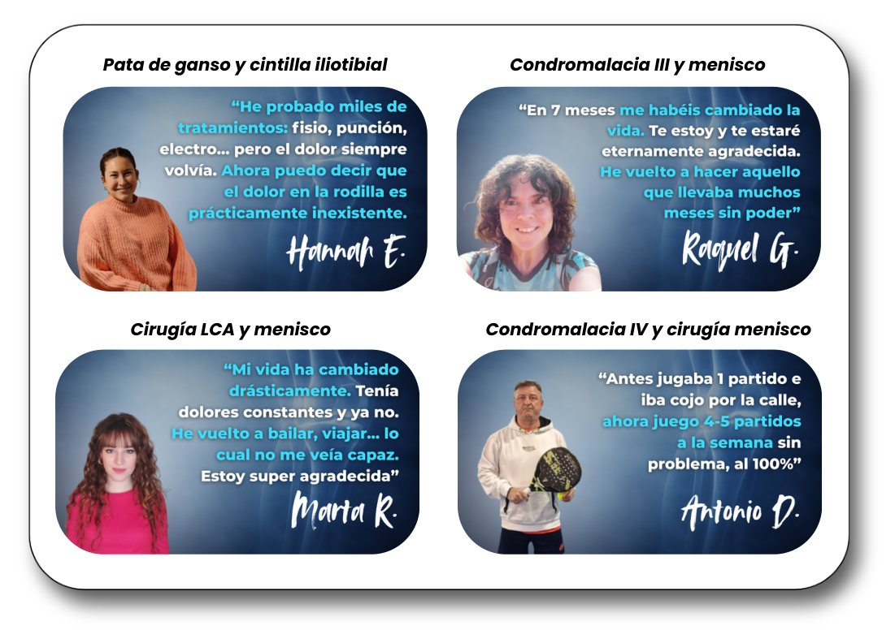

Elimina tu dolor “crónico” de rodilla evitando estos 3 errores
Especialista en readaptación de lesiones de rodilla
Si estás leyendo esto, lo más probable es que lleves meses saltando de sesión en sesión de fisioterapia, gastando dinero en masajes, corrientes o pinchazos, y sintiendo que tu rodilla sigue exactamente igual (o peor).
Te han dicho que guardes reposo, que te pongas hielo y que esperes a que deje de doler para poder volver a moverte con normalidad o entrenar un poco.
Con suerte, te habrán mandado unos pocos ejercicios, pero siempre que duele, paras por completo por miedo a empeorar la situación.
Esto es un error. La medicina tradicional trata el síntoma en una camilla, pero tu rodilla necesita recuperar su función en el gimnasio (respetando los niveles de tolerancia de dolor).
A continuación, tienes los 3 errores ciegos que estás cometiendo y que bloquean tu recuperación:
Si llevas semanas o meses lesionado de la rodilla, es muy probable que tu rutina se resuma en lo siguiente:
Vas a clínica → Camilla → El profesional de turno te da un masaje, te pone corrientes, te clava agujas, te aplica frío... y ya.
Sales de la sesión con una ligera sensación de alivio que te dura apenas unas horas, pero al día siguiente, en cuanto intentas agacharte, caminar rápido, estar horas de pie o subir una escalera, el dolor punzante en la rodilla vuelve a aparecer exactamente en el mismo sitio.
Esto ocurre porque estás atrapado en la trampa de los tratamientos pasivos. Estas solo actúan como un analgésico temporal; adormecen la señal de dolor en tu sistema nervioso, pero no solucionan absolutamente nada. Ninguna camilla del mundo tiene la capacidad de enseñar a tu articulación a soportar el peso de tu cuerpo, ni de devolverle la estabilidad que ha perdido, ni de frenar el desgaste.
Cuando te limitas a recibir un tratamiento tumbado, adoptas un rol totalmente pasivo, y esta búsqueda de alivio instantáneo en la camilla es el motivo por el cual sigues estancado.
Si tu estrategia depende de estar tumbado esperando “a que te curen”, estás cronificando la lesión y perdiendo un tiempo de recuperación de oro.
Tu rodilla no necesita que la mimen; necesita recuperar la capacidad de soportar cargas, y eso jamás va a ocurrir sin movimiento directo.
Aunque hay gente que entiende que sólo hacer tratamiento pasivo es un error, y que no va a devolver la funcionalidad a su rodilla, no saben cómo empezar a trabajar en su lesión de forma activa, porque tienen dolor.
Es lógico que pienses que si te duele la rodilla al moverte, lo correcto es parar para no "romperte" más. Nos han educado bajo la idea de que el dolor siempre es señal de alarma y destrucción.
Sin embargo, en una lesión de rodilla, el reposo absoluto es una trampa mortal: debilita a pasos agigantados la musculatura que protege y estabiliza la articulación (cuádriceps, isquiotibiales, glúteos...), dejándola todavía más indefensa.
Imagina tu rodilla lesionada como una puerta cuyas bisagras están oxidadas y se queda bloqueada, no la puedes abrir y cerrar como debería. Si dejas la puerta cerrada durante semanas, la puerta va a seguir igual o incluso peor. Para arreglarla, no la dejas quieta; le echas aceite y la mueves con cuidado para que se “engrase”, ¿no?
En tu cuerpo, el "aceite" es la sangre cargada de nutrientes. El tejido de tu rodilla no tiene un riego sanguíneo potente por sí mismo; necesita el bombeo del movimiento y la contracción muscular para que le lleguen los nutrientes necesarios para regenerarse y sanar.
El dolor actual que sientes no significa que estés empeorando la lesión, significa que tu rodilla está débil y ha perdido tolerancia al esfuerzo. Por eso debes “echarle aceite” a tu rodilla yendo al gimnasio, es lo único que la “engrasará” de verdad
El tercer gran error es desarrollar una dependencia absoluta hacia factores externos, ya sean las manos de un terapeuta o la mirada constante de un entrenador en directo.
Muchos lesionados viven atrapados en la mentalidad de "necesito que el fisio me toque" o "necesito un entrenador a mi lado que me diga si meto la rodilla un centímetro hacia dentro al hacer una sentadilla".
Esta creencia es destructiva porque traslada la responsabilidad de tu recuperación a un tercero y te convierte en un sujeto frágil.
Ninguna manipulación externa en camilla genera cambios estructurales permanentes en tus tendones ni en tus cartílagos. Del mismo modo, un entrenador que solo se limita a corregir tu postura en vivo con frases típicas no te está curando; solo está actuando como una muleta visual.
Si dependes de que alguien te valide cada repetición o te "coloque" la rodilla para sentirte seguro, jamás vas a recuperar la autonomía.
Tu rodilla no está desalineada ni necesita que la manipulen. Tampoco necesita correcciones milimétricas constantes en cada ejercicio. Lo que necesita es que tu sistema nervioso y muscular aprenda a gestionar las fuerzas por sí mismo.
La verdadera readaptación ocurre cuando tú entiendes el proceso, tomas el control, y empiezas a trabajar de forma activa por tu cuenta 4-5 días / semana.
Esto es lo que diferencia a los lesionados crónicos de las personas que vuelven a correr sin miedo. No necesitas un supervisor de gimnasio ni un manipulador de camilla; necesitas una estrategia inteligente que te vuelva fuerte, independiente y autosuficiente de por vida.
Por eso te dejo estos testimonios de solo 3 minutos cada uno, en el que personas que tenían este pensamiento “pasivo” cuentan como en 3-6 meses de trabajo ACTIVO, su vida dio un cambio radical, y el dolor y las limitaciones desaparecieron por completo

Si quieres conseguir eliminar tu dolor de rodilla y la lesión para siempre, y dejar de depender de “parches” temporales... mándame un mensaje privado en INSTAGRAM con la palabra
¿Quieres que lo veamos aplicado a tu caso? Cada rodilla y cada proceso es distinto, y muchas veces pequeños ajustes marcan una gran diferencia.
Escríbeme sin compromiso